# 安装包
if (!requireNamespace("UpSetR", quietly = TRUE)) {
install.packages("UpSetR")
}
if (!requireNamespace("ggupset", quietly = TRUE)) {
install.packages("ggupset")
}
# 加载包
library(UpSetR)
library(ggupset)Upset图
Upset 图与 Venn 图类似，主要展示不同集合交叉点中的元素数量，然而当 Venn 图中集合达到 5 个时可读性开始急剧下降，Upset 图则可以很好的解决 Venn 图可读性差的问题，并且还能提供元素属性的附加统计信息。
示例

此图为 Upset 图的基本样式，图像分为三部分，分别是上方的不同集合之间交集的元素数量发直方图，左侧为不同集合包含元素数量的直方图。中间的矩阵部分则是集合之间的交集情况，如下图所示：
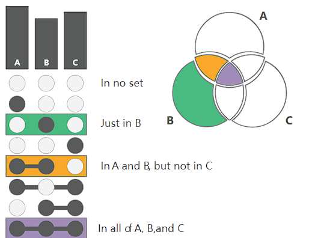
当一个交集的元素存在于某集合时使用黑点标记，否则使用白点标记，例如绿色部分仅在 B 集合处标记为黑色则表明该列为仅在 B 中存在的元素，以此类推。
环境配置
系统要求： 跨平台（Linux/MacOS/Windows）
编程语言：R
依赖包：
UpSetR;ggupset
数据准备
-
movies数据集由 GroupLens 实验室和 Bilal Alsallakh 创建；mutations数据集最初由 TCGA 联盟创建，表示 284 个多形性胶质母细胞瘤中 100 个常见基因突变的突变情况。 - 两个数据集均被包含至 UpSetR 包中
# UpSetR 可以接受三种格式的数据，第一种是具有命名向量的list(见listInput变量)，第二种是表达式向量(见expressionInput变量)，第三种是0,1构成的数据框(见movies和mutations变量)
# 读取 CSV 数据
# list格式需要对list中的每个向量为一个集合，UpSetR要求对每个集合进行命名，向量中的元素为对应集合的成员。使用upset函数绘图时需要使用fromList函数对list数据进行格式转化。
listInput <- list(one = c(1, 2, 3, 5, 7, 8, 11, 12, 13), two = c(1, 2, 4, 5, 10), three = c(1, 5, 6, 7, 8, 9, 10, 12, 13))
#expression格式则接受一个类表达式的向量。表达式向量的元素是一个交集中集合的名称（以&分隔），以及该交集中的数字元素。使用upset函数绘图时需要使用fromExpression函数对list数据进行格式转化。
expressionInput <- c(one = 2, two = 1, three = 2, `one&two` = 1, `one&three` = 4, `two&three` = 1, `one&two&three` = 2)
# 数据框格式每列为一个集合，每行为一个元素。要求数据框由0 1组成，分别表示元素是否存在于集合，当列存在非01的值时，该列被认为是元素的属性。
movies <- read.csv( system.file("extdata", "movies.csv", package = "UpSetR"), header=T, sep=";" )
mutations <- read.csv( system.file("extdata", "mutations.csv", package = "UpSetR"), header=T, sep = ",")可视化
1. 基础 Upset 图
此基础 Upset 图展示了包含不同元素的电影数量。
# 使用上面三种数据类型绘制 Upset 图
upset(fromList(listInput))
upset(fromExpression(expressionInput))
upset(movies)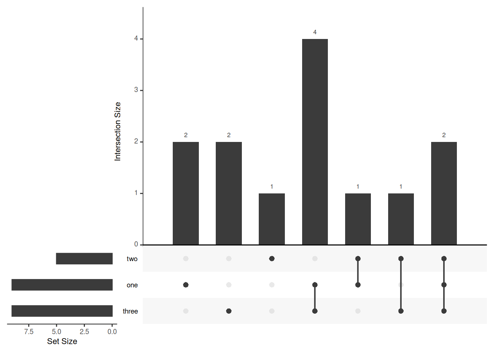

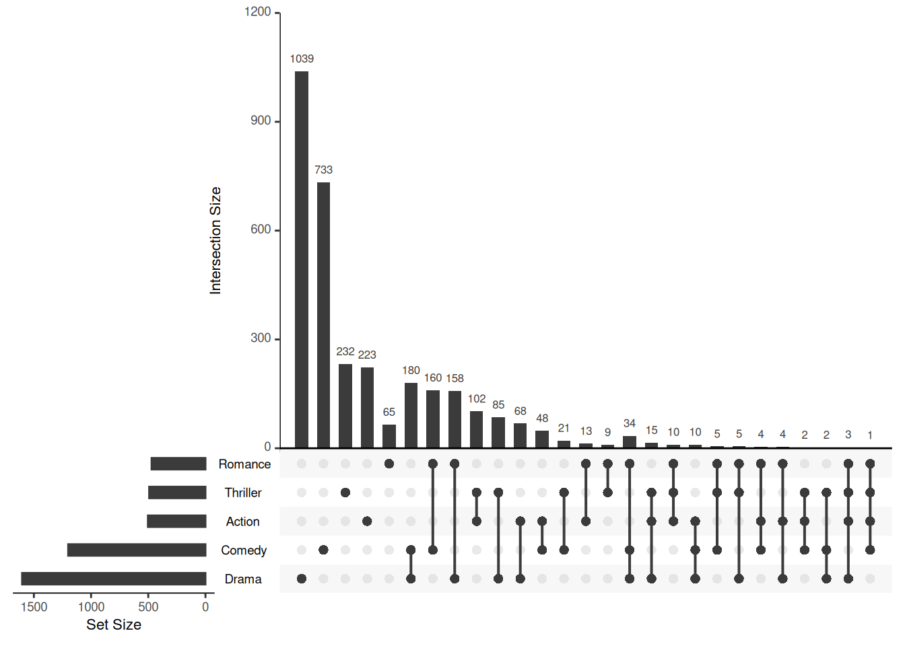
提示
关键参数: nsets
nsets 参数决定了使用多少个集合绘制 UpSet 图，未设置时默认为 5。
# 设置 nset 为 6，使用 mutations 数据集
upset(mutations, nsets = 6)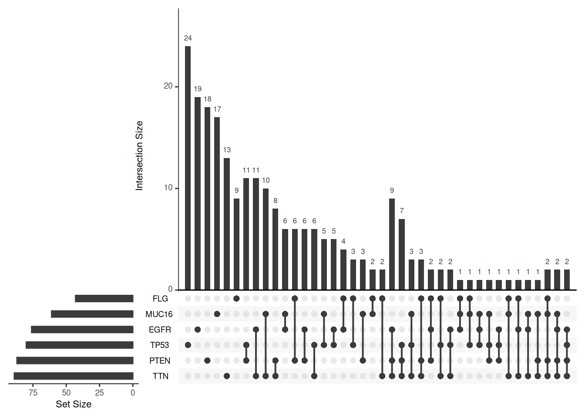
nsets
此图使用了突变次数最多的 6 个基因，展示了包含不同突变的多形性胶质母细胞瘤数量。
提示
关键参数: order.by
order.by 参数决定了 UpSet 图中交集的排列顺序，未设置时根据取交集的集合数量从小到大排列，设置为 “degree” 时根据交集的元素数量从大到小排列，设置为 “freq” 时根据交集的大小从大到小排列。
# order.by不同的三种设置方式，使用mutations数据集
upset(mutations)
upset(mutations, order.by = "degree")
upset(mutations, order.by = "freq")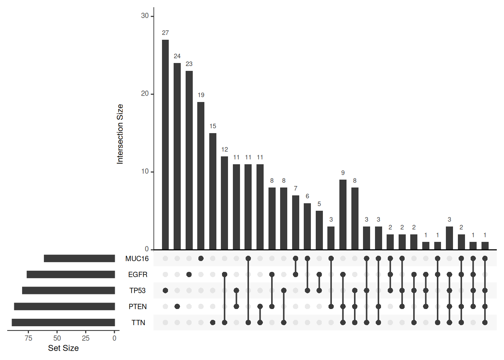
order.by
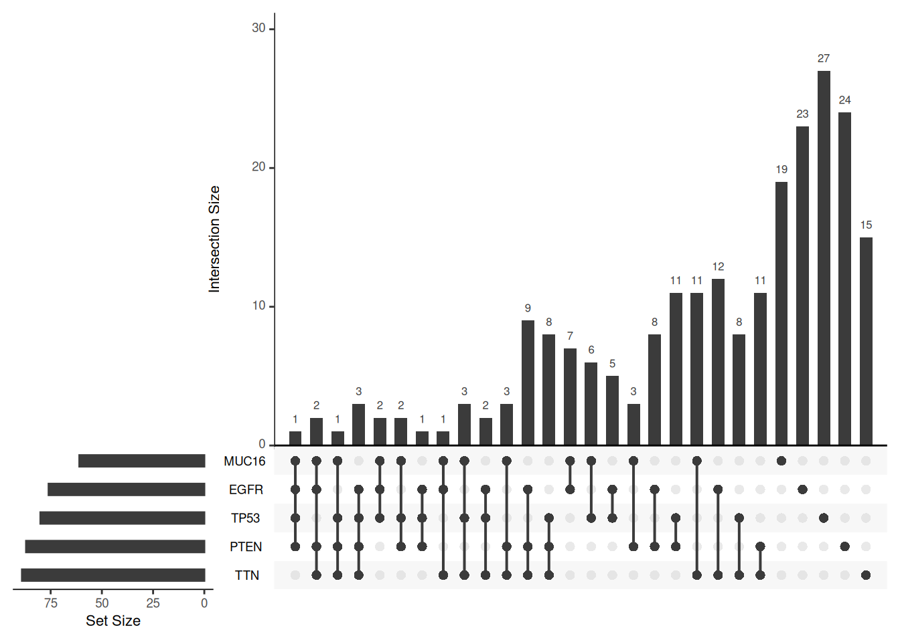
order.by
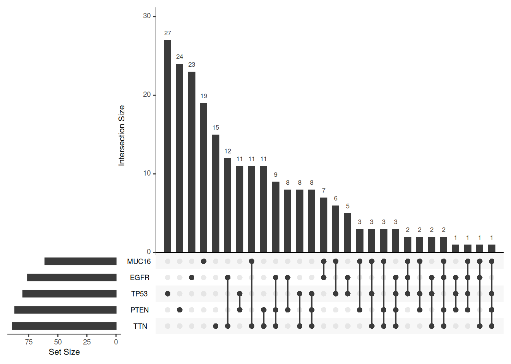
order.by
提示
关键参数: sets
sets 参数可以指定需要绘制的集合，未设置时取元素最多的 nsets 个集合，另外 keep.order 参数可以使集合柱状图的顺序与 sets 输入的顺序保持一致。
# 指定"TTN","NF1","FLG","KEL"四个基因为目标集合，并使集合柱状图顺序与sets参数一致保持
upset(mutations, sets = c("TTN","NF1","FLG","KEL"), keep.order = T)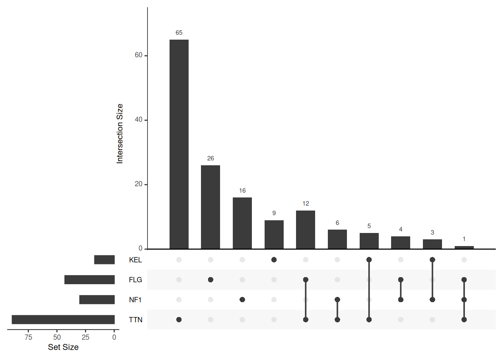
sets
提示
关键参数: empty.intersections
empty.intersections 参数默认设置为 “NULL”，此时不显示空交集，当设置为任意参数时会显示空交集。
#显示空交集
upset(mutations, sets = c("TTN","NF1","FLG","KEL"), keep.order = T, empty.intersections=T)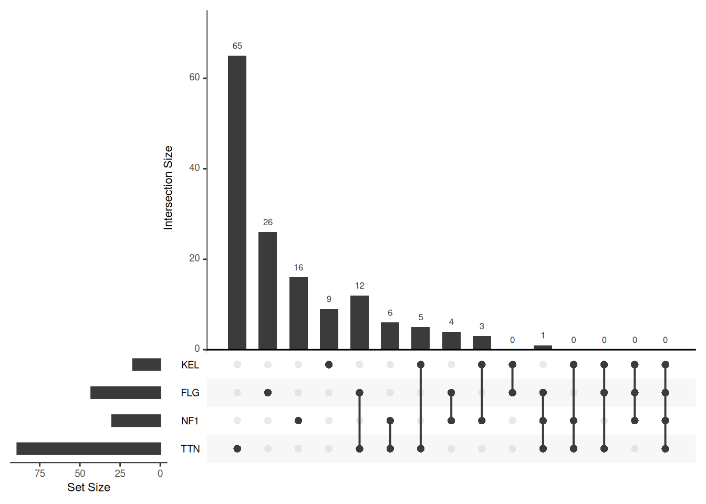
empty.intersections
提示
关键参数: decreasing
decreasing 参数设置则可以调转 order.by 或 keep.order 的方向，有多个排序方向需要控制时，输入含有多个元素的向量，如”c(T,F)”
# 调换排序方向
upset(mutations, sets = c("TTN","NF1","FLG","KEL"), keep.order = T, decreasing = c(T, T))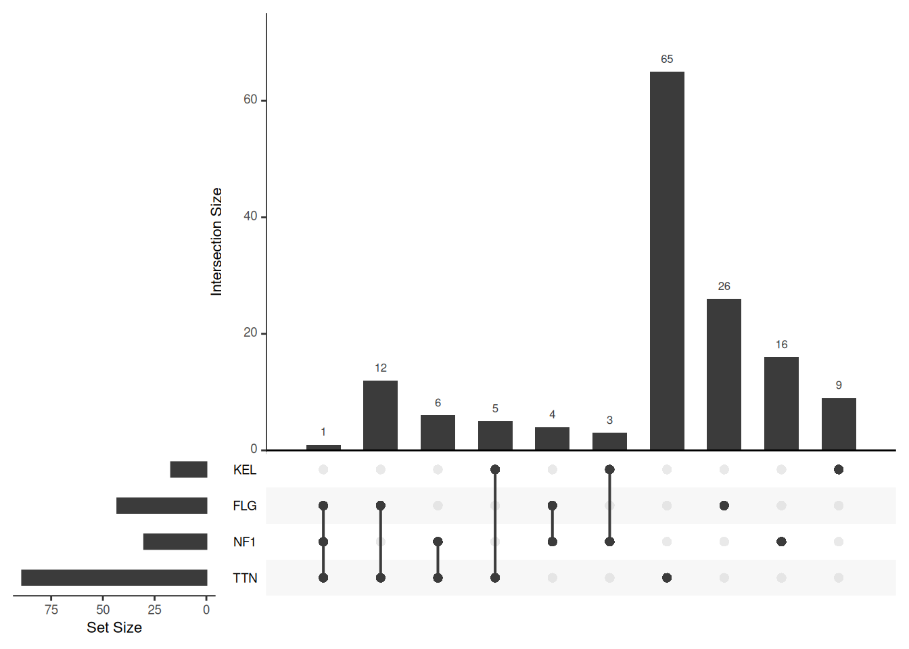
decreasing
2. 个性化 Upset 图
图像比例方面，mb.ratio 参数默认为 “c(0.7, 0.3)”，可以指定交集柱状图与交集矩阵点图之间的比例大小，需要输入一个含有两个元素的向量，分别表示柱状图与矩阵点图的高度占全图的高度比例。
upset(mutations, mb.ratio=c(0.5,0.5))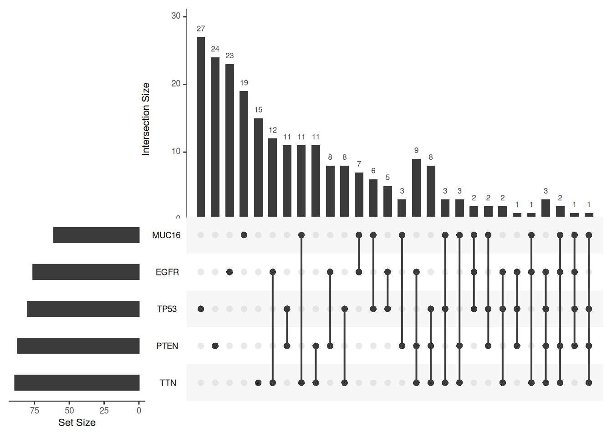
mb.ratio
图像颜色方面，UpSetR 包提供了多个参数可以设置 Upset 图中不同部分的颜色：
upset(mutations,
shade.color = "#4C4C4C", # 交集矩阵点图阴影的颜色
matrix.color = "#067522", # 矩阵中点和线的颜色
main.bar.color = "#3E7B92", # 交集元素数量柱状图的颜色
sets.bar.color = "#C9AE42" # 集合数量柱状图的颜色
)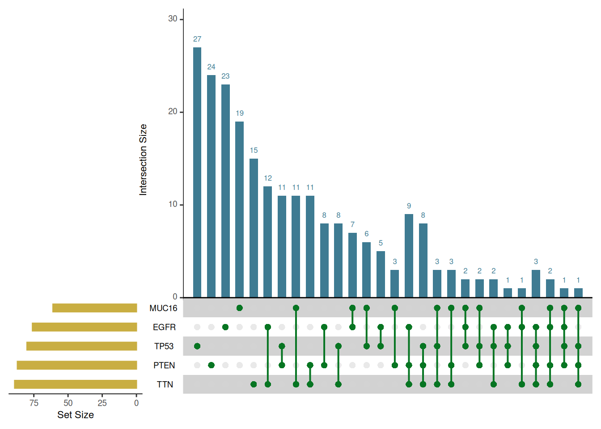
如果想要突出某些交集，则需要使用到 UpSetR 包提供的 queries 参数，queries 参数需要输入一个列表 list，这个 list 中至少包含一个子 list，每个子 list 中需要包含以下字段：query、params、color、active 和 query.name。
- query 可输入 intersects 或 elements，效果都一样
- params 指定一个子集，输入同样为一个 list，list 中的元素可为集合的名称，多个元素表示取这些元素的交集。
- color 是将在 plot 上表示的颜色。如果没有提供颜色，将从 UpSetR 默认调色板中选择一种颜色。
- active 决定查询将如何在图上表示。如果 active 为 TRUE，则交叉大小条将被表示查询的条覆盖。如果 active 为 FALSE，一个抖动点将被放置在相交的大小条上。
- query.name 为当前突出集合的名称，需要用 query.legend 参数指定图例位置，query.legend 可以输入”top”或”bottom”
upset(mutations, sets = c("TTN","NF1","FLG","KEL"), keep.order = T,
query.legend = "top",
queries = list(list(query = intersects, params = list("TTN"), active = T, query.name = "NAME"),
list(query = elements, params = list("TTN","NF1"))))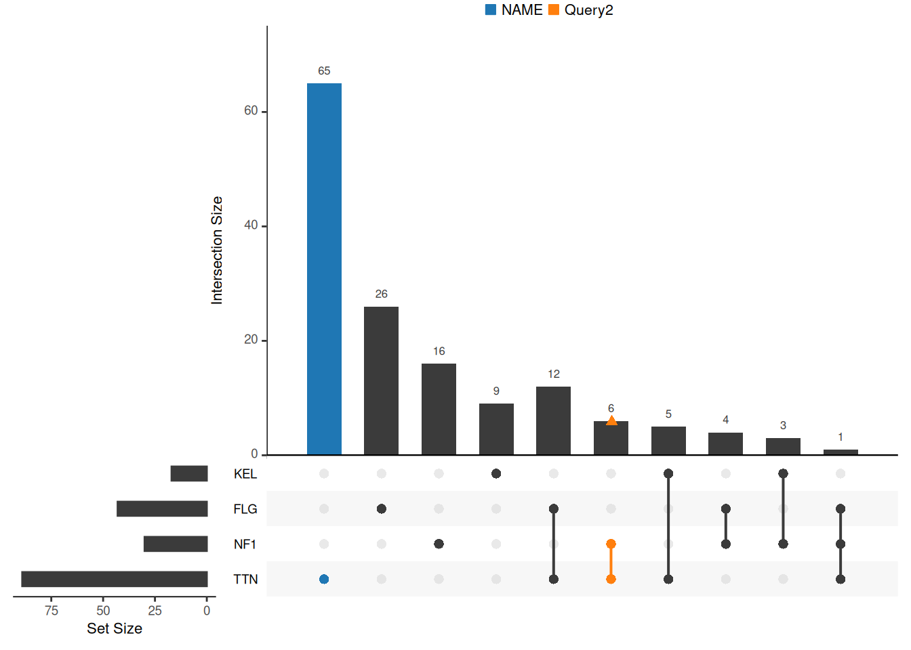
queries
图像标签与字体方面，同样有多个参数可以调整：
upset(mutations,
number.angles = 30, # 交集柱状图上方的数字倾斜角度
point.size = 2, # 矩阵中点的大小
line.size = 1, # 矩阵中线的大小
sets.x.label = "NAME1", # 集合柱状图的轴标签
mainbar.y.label = "NAME2", # 交集柱状图的轴标签
text.scale = c(1.3, 1.3, 1, 1, 1.2,1)) # 文本大小设置，分别对应交集柱状图的轴标签，分别对应交集柱状图的数字，集合柱状图的轴标签，集合柱状图的数字，集合的名字，交集柱状图上方的数字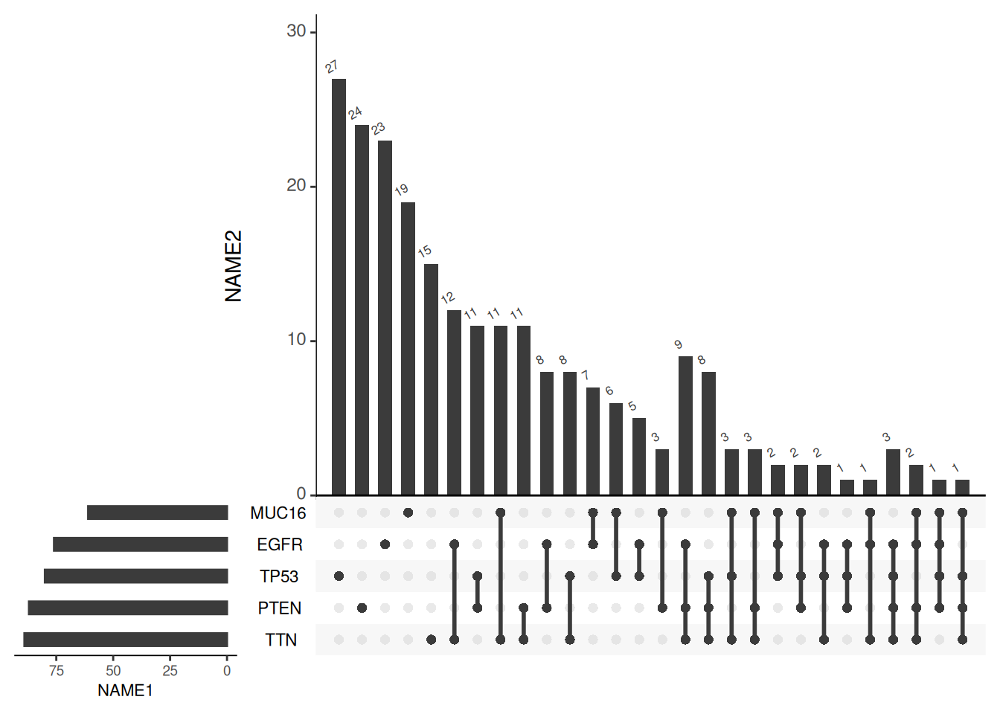
3. 进阶 Upset 图
有时候还需要展示集合中元素的某些属性，如展示 1995 年上市的电影在不同交集中的分布。同样需要用到 queries 参数，在 params 字段中输入一个记录不同电影上市年份信息的列名 与 1995，即可高亮显示对应 1995 年上市电影的分布情况。
upset(movies, sets = c("Action", "Adventure", "Children", "War", "Noir"),
queries = list(list(query = elements, params = list("ReleaseDate",1995), active = T)))如果是复合条件，例如仅高亮 1995 年上市的动作电影，可以额外引入 expression 参数用于对查询条件进行进一步限制。
upset(movies, sets = c("Action", "Adventure", "Children", "War", "Noir"),
queries = list(list(query = intersects, params = list("Action"), active = T)),
expression = "ReleaseDate == 1995")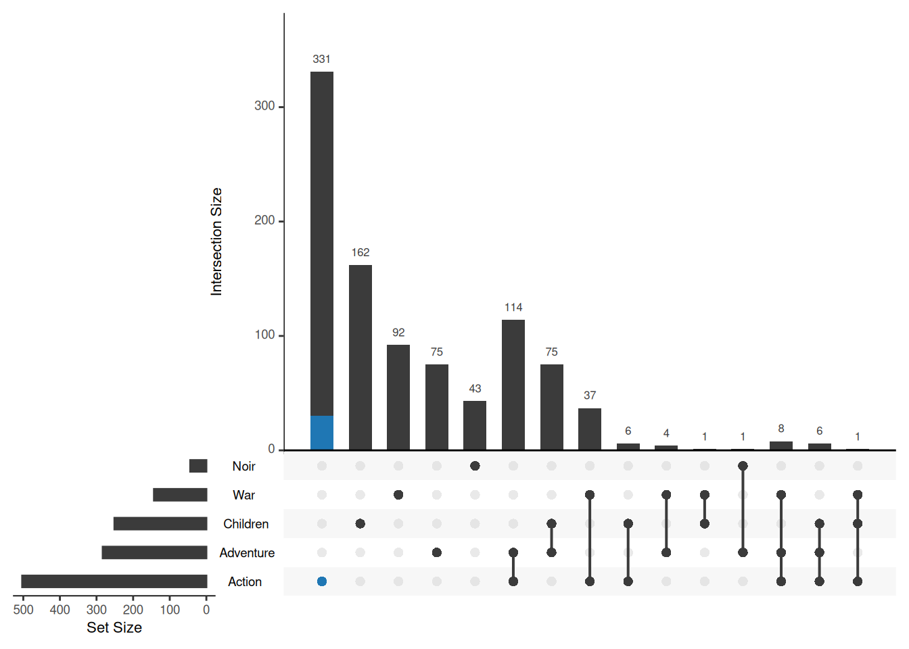
expression
上述方法仅限于离散型变量，然而元素的属性还可能包括连续性变量，对于连续性变量推荐自定义函数进行查询，以下代码可以用于高亮 Watches 属性大于 100 的元素：
Myfunc <- function(row, num) {
data <- row["Watches"] > num
}
upset(movies, sets = c("Action", "Adventure", "Children", "War", "Noir"),
queries = list(list(query = Myfunc, params = list(100), active = T)))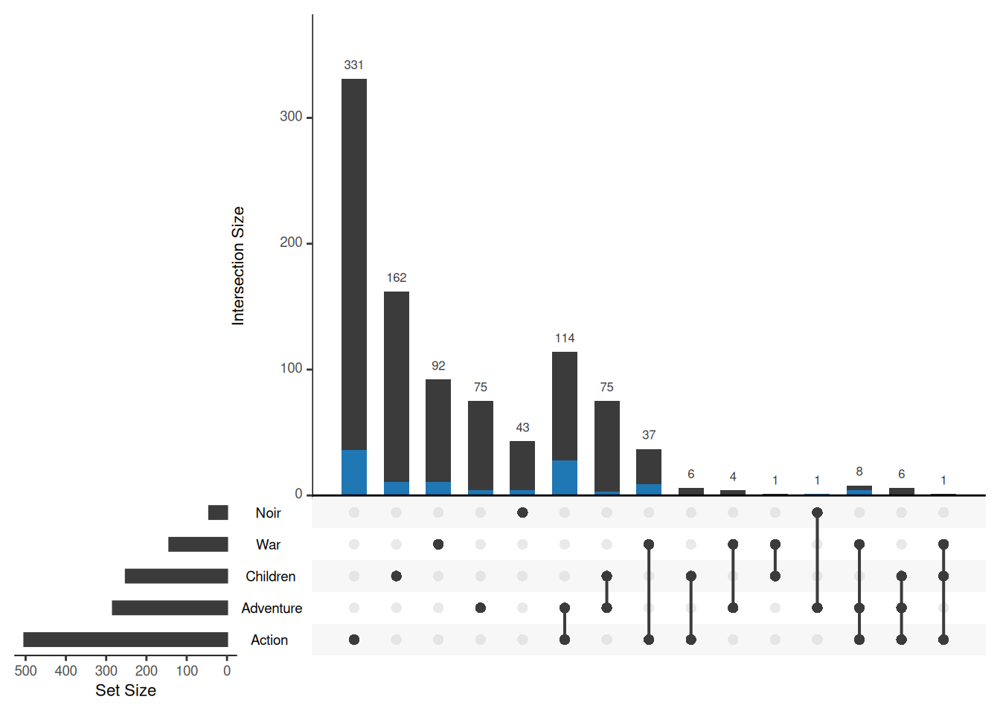
UpsetR 还支持同时绘制其他类型的图像包括直方图、散点图、密度图。前二者需要使用 attribute.plots 参数绘制，箱线图需要使用 boxplot.summary 参数绘制，箱线图与其他三种图像不能兼容。 attribute.plots 包含以下子参数：
-
gridrows：指定扩展绘图窗口的范围以留出属性图（attribute plots）的空间。UpSetR 绘图基于 100x100 的网格布局。例如，若将 gridrows 设为 50，新的网格布局将变为 150x100，其中 1/3 的区域用于放置属性图。 -
plots：接收一个参数 list，包括 plot、x、y（若适用）和 queries。- plot：是一个返回 ggplot 对象的函数，可输入histogram或scatter_plot。
- x：定义 ggplot 中使用的 x 轴美学映射（以字符串形式输入）。
- y：定义 ggplot 中使用的 y 轴美学映射（以字符串形式输入）。
- queries：控制是否在属性图上叠加查询结果。若为 TRUE，属性图会叠加查询数据；若为 FALSE，则不在属性图中显示查询结果。
-
ncols：指定属性图在 gridrows 预留空间中的排列方式。例如：- 若输入两个属性图且 ncols=1，则两图上下排列。
- 若输入两个属性图且 ncols=2，则两图并排显示。
upset(movies, sets = c("Action", "Adventure", "Children", "War", "Noir"),
queries = list(list(query = intersects, params = list("War"), active = T),
list(query = elements, params = list("Noir"))),
attribute.plots=list(gridrows = 100,
ncols = 1,
plots = list(list(plot=histogram,
x="AvgRating",
queries=T),
list(plot = scatter_plot,
y = "AvgRating",
x = "Watches",
queries = T)
)
)
)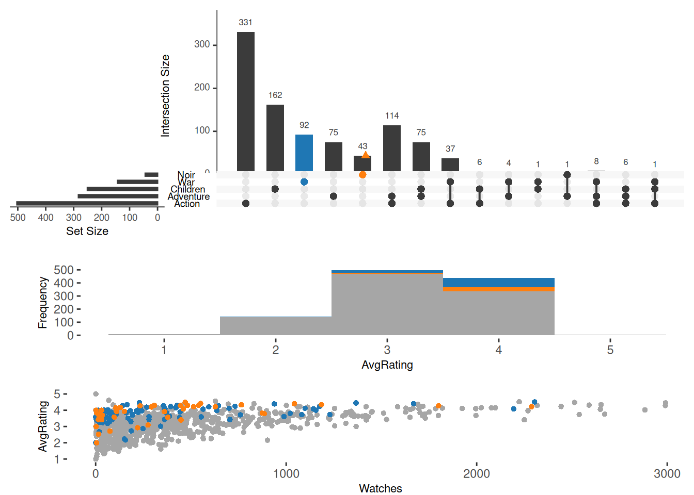
attribute.plots
boxplot.summary 相对简单，只需要指定元素属于对应的列名即可：
upset(movies, sets = c("Action", "Adventure", "Children", "War", "Noir"),
queries = list(list(query = intersects, params = list("War"), active = T),
list(query = elements, params = list("Noir"))),
boxplot.summary = c("AvgRating", "ReleaseDate"))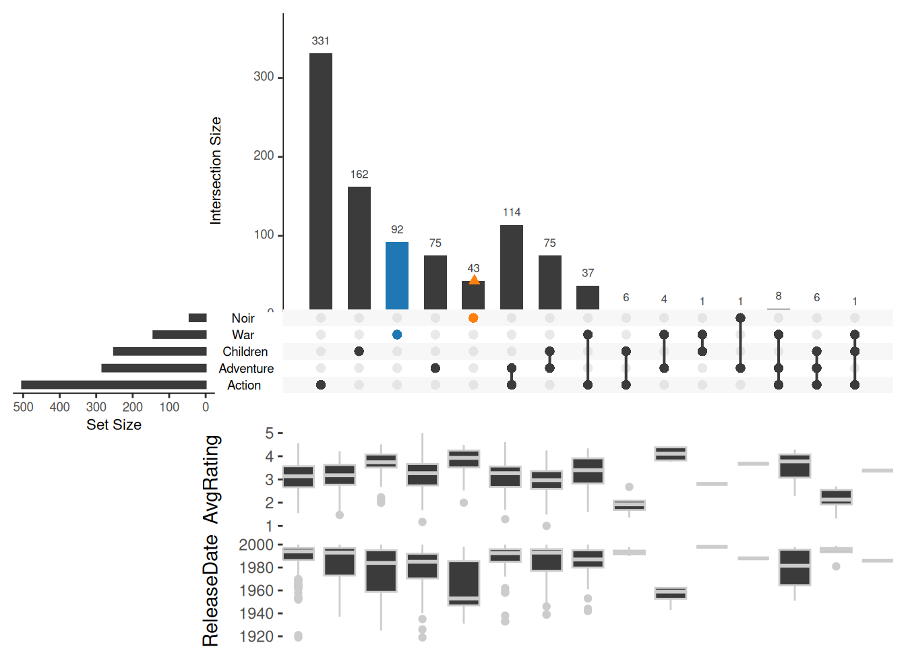
boxplot.summary
4. 生物数据示例
数据集采用 ggupset 包中的 df_complex_conditions 数据集
# 整理格式
df <- df_complex_conditions
df$"T8" <- ifelse(df$Timepoint==8,1,0)
df$"T24" <- ifelse(df$Timepoint==24,1,0)
df$"T48" <- ifelse(df$Timepoint==48,1,0)
df$KO <- ifelse(df$KO=="TRUE",1,0)
df$DrugA <- ifelse(df$DrugA=="Yes",1,0)
# 需要注意的是UpSetR包不支持tibble数据框，需要转化为传统的dataframe
df <- data.frame(df[sample(360,180),c(3,4,1,2,5:7)]) # 这里为了美观随机挑选一半的数据
# upset绘图
upset(df,
queries = list(list(query = intersects, params = list("DrugA","T48"), active = T)),
boxplot.summary = c("response"))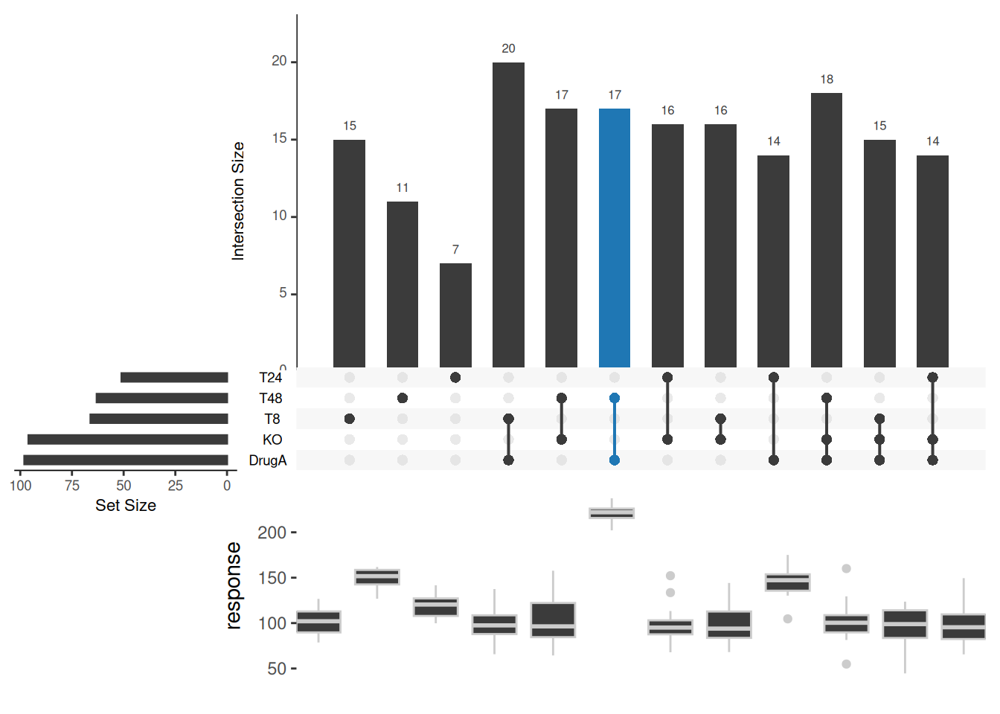
boxplot.summary
此图展示了敲除体 KO 与 WT(KO行为白点) 在施加或不施加药物(DrugA)处理在不同时间后生物体的响应情况。
应用场景

该图展示了人群中患不同疾病的统计情况以及他们的生存时间。 [1]
参考文献
[1] Peng X, Hu Y, Cai W. Association between urinary incontinence and mortality risk among US adults: a prospective cohort study. BMC Public Health. 2024 Oct 9;24(1):2753. doi: 10.1186/s12889-024-20091-x. PMID: 39385206; PMCID: PMC11463129.